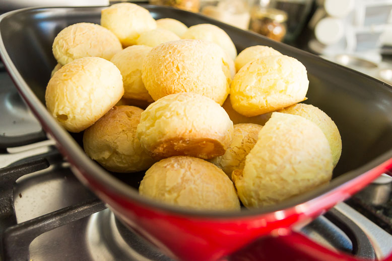

Pão de queijo

O pão de queijo é uma opção fácil prática para o café da manhã ou lanche da tarde. Simples de preparar, a receita é feita com poucos ingredientes e que você provavelmente tem em casa: polvilho doce, leite, ovo, queijo meia cura, sal e óleo.
Ingredientes
- 250 gramas de polvilho doce
- 1 xícara de chá de leite
- Meia xícara de chá de óleo
- 1 colher de chá de sal
- 1 ovo
- 1 xícara de chá de queijo meia cura ralado
- Óleo para untar as mãos
Modo de Preparo
- Em um recipiente, coloque os 250 gramas de polvilho doce. Reserve.
- Em uma panela, coloque 1 xícara de chá de leite, meia xícara de chá de óleo e 1 colher de chá de sal. Deixe ferver.
- Em seguida, transfira a mistura para a tigela com polvilho doce.
- isture os ingredientes até esfriar.
- Depois, adicione 1 ovo e 1 xícara de chá de queijo meia cura ralado. Misture até a massa ficar úmida.
- Unte as mãos com óleo e use uma colher para pegar pequenas porções da massa.
- Faça bolinhas com a massa.
- Coloque as bolinhas em uma forma e leve para assar em forno preaquecido a 200 graus por aproximadamente 20 minutos.
Votar para o início